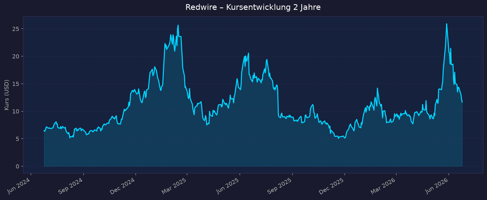
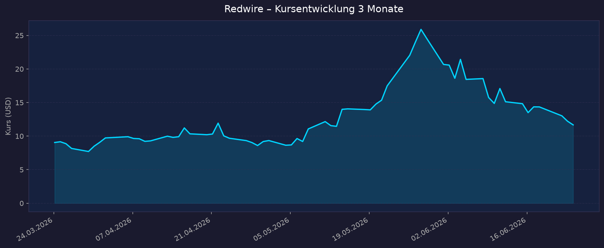

📈 1. Kursentwicklung
Aktueller Kurs: ~11,67 USD (Schlusskurs 2026-06-24) | Veränderung zuletzt: ~ −5 % am Vortag (Finviz: 12,22 → 11,59 USD)
Einordnung: Redwire ist seit dem SPAC-Börsengang 2021 notiert; ausreichende Historie für 2-Jahres- und 3-Monats-Chart vorhanden.
Chart – 2 Jahre

Chart – 3 Monate

| Zeitraum | Kurs Start | Kurs Ende | Veränderung |
|---|---|---|---|
| 2 Jahre | 6,46 USD (24.06.2024) | 11,67 USD | +81 % |
| 3 Monate | 9,05 USD (24.03.2026) | 11,67 USD | +29 % |
| 52-Wochen-Hoch | — | ~25,90–26,64 USD | — |
| 52-Wochen-Tief | — | ~4,87–5,06 USD | — |
Kommentar: Extrem volatil. Die Aktie schoss bis Anfang 2026 auf ~26 USD (Weltraum-Euphorie, Edge-Autonomy-Übernahme), korrigierte dann scharf auf unter 9 USD und erholte sich seit März wieder auf ~12 USD. Die Spanne 52W-Tief 4,87 USD bis 52W-Hoch 26,64 USD zeigt das spekulative Profil. Der SpaceX-Börsengang (12.06.2026, Ticker SPCX, ~1,75 Bio. USD) hat den Sektor 2026 stark bewegt und bei kleineren Pure-Plays wie RDW für zusätzliche Schwankungen gesorgt.
🔗 Interaktiver Chart: https://www.tradingview.com/symbols/NYSE-RDW/
💹 2. KGV-Entwicklung (Kurs-Gewinn-Verhältnis)
Aktuelles KGV: n/a — defizitär
| Zeitraum | KGV | Einordnung |
|---|---|---|
| Aktuell | n/a — defizitär | EPS (TTM) ≈ −2,69 USD |
| vor 3 Monaten | n/a — defizitär | — |
| vor 12 Monaten | n/a — defizitär | — |
| vor 24 Monaten | n/a — defizitär | — |
Bewertung: Redwire ist ein defizitärer Pure-Play. Es existiert kein sinnvolles KGV, da das Unternehmen tief in der Verlustzone steht (TTM-EPS ≈ −2,69 USD; FY2025 Nettoverlust −226,6 Mio. USD). Analysten erwarten auch FY2026 einen Verlust (EPS-Schätzung ≈ −0,50 USD). Die Bewertung muss daher über P/S, EV/Sales, Cash-Runway, Verwässerung und Auftragsbestand erfolgen (siehe Abschnitte 3 ff.).
💰 3. Sales Multiple (Kurs-Umsatz-Verhältnis / P/S)
Aktuelles P/S-Verhältnis: ~7,3–7,5 (TTM)
| Zeitraum | P/S Ratio | Einordnung |
|---|---|---|
| Aktuell (Juni 2026, TTM) | ~7,25–7,46 | erhöht ggü. eigener Historie, aber günstig ggü. teureren Pure-Plays |
| Ende 2025 | ~4,45 | — |
| Ende 2024 | ~3,75 | — |
| Ende 2023 | ~0,76 | sehr niedrig (Tiefpunkt der Aktie) |
Trend: Steigend. Das P/S hat sich von ~0,76 (Ende 2023) über 3,75 (2024) und 4,45 (2025) auf aktuell ~7,3 ausgeweitet — eine deutliche Multiple-Expansion durch die Weltraum-/Defense-Rally. Mit ~7–8 liegt RDW jedoch klar unter den teuersten Pure-Plays des Sektors (z. B. Rocket Lab oder AST SpaceMobile, deren Multiples zeitweise deutlich höher lagen). Auf Basis der FY2026-Guidance (450–500 Mio. USD Umsatz, Marktkap ~2,77 Mrd. USD) ergibt sich ein forward P/S von ~5,5–6,2 — die Bewertung „verbilligt" sich also mit dem erwarteten Umsatzsprung von ~42 %.
Hinweis: Bei companiesmarketcap erscheint zusätzlich ein „TTM 2,09"-Wert, der jedoch inkonsistent mit Marktkap/Umsatz ist; maßgeblich sind die ~7,25–7,46 von Finviz/companiesmarketcap-Jahresreihe.
📊 4. Handelsvolumen (Trading Volume)
| Zeitraum | Ø Tagesvolumen | Auffälligkeiten |
|---|---|---|
| 3-Monats-Durchschnitt | ~38,6 Mio. Aktien (yfinance) / ~39,1 Mio. (Finviz) | sehr hohes Interesse, deutlich über Langzeitschnitt |
| 2-Jahres-Durchschnitt | ~10,2 Mio. Aktien | — |
| Volumen-Peak (2J) | ausgeprägte Spitzen rund um Earnings (Q3/Q4 2025, Q1 2026) und Defense-/Space-Vertragsmeldungen Juni 2026 | Earnings-Misses + Kurssprünge |
Volumentrend: Stark steigend. Das durchschnittliche Tagesvolumen der letzten 3 Monate (~39 Mio.) liegt rund 4× über dem 2-Jahres-Schnitt (~10 Mio.). Das signalisiert massiv gestiegenes Anlegerinteresse — typisch für eine hochvolatile Story-Aktie im Weltraum-Hype, mit entsprechend hohem spekulativem Anteil.
🏦 5. Insider Trades (letzte 2 Jahre)
| Datum | Name | Funktion | Kauf/Verkauf | Anzahl Aktien | Wert (USD) |
|---|---|---|---|---|---|
| Nov. 2025 | Peter A. Cannito | Chairman & CEO | Kauf | 32.155 | ~199.672 USD (≈ 6,21 USD/Aktie) |
| 2025 | Peter A. Cannito | CEO | Kauf | — | ~100.000 USD @ 9,36 USD |
| 2025 | Joanne Isham | Director | Kauf | — | ~50.000 USD @ 11,02 USD |
| 2025 | Jonathan Baliff | CFO | Kauf | — | ~25.000 USD @ 11,38 USD |
| 2025 | Aaron Futch | EVP, General Counsel | Kauf | — | ~29.000 USD @ 9,10 USD |
| 2025 | Chris Edmunds | CAO | Kauf | — | ~7.000 USD @ 8,91 USD |
| 01.07.2025 | Peter A. Cannito | CEO | (F) Steuer-Einbehalt RSU | −12.779 | kein Verkauf am Markt |
| 31.12.2025 | Peter A. Cannito | CEO | PSU-Wandlung (→ Aktien) | +255.000 | Verwässerung, kein Cash |
3-Monats-Überblick: Keine wesentlichen offenen Insider-Verkäufe; im 90-Tage-Fenster bis Anfang Jan. 2026 dominierte Insider-Kauf durch CEO Cannito (~40.900 Aktien). 2-Jahres-Überblick: Netto-Käufe — mehrere Vorstände und Direktoren kauften 2025 zu Kursen von ~9–11 USD (kombiniert ~211.000 USD, Ø ≈ 9,86 USD). Das ist ein positives Signal (Insider kauften nahe der Tiefststände). Gegenzurechnen ist die laufende Verwässerung durch RSU-/PSU-Vesting (z. B. +255.000 Aktien aus PSU-Wandlung Ende 2025).
Quelle: SEC Edgar / StockTitan / Investing.com (Form 4). OpenInsider war zum Datenstand nicht erreichbar.
🩳 6. Short-Positionen
Aktuelle Short Quote: ~16,5 % des Streubesitzes (Float) — 36,86 Mio. Aktien short (Finviz)
| Zeitraum | Short Interest | Veränderung |
|---|---|---|
| Aktuell | ~16,5 % des Float | — |
| vor 3 Monaten | nicht verfügbar | — |
| vor 6 Monaten | nicht verfügbar | — |
| vor 12 Monaten | nicht verfügbar | — |
Einschätzung: Hoch. Eine Short-Quote von ~16,5 % ist deutlich überdurchschnittlich und spiegelt die Skepsis vieler Marktteilnehmer gegenüber dem Verlustprofil und den wiederholten Umsatz-/EPS-Misses wider. Gleichzeitig erhöht ein so hoher Short-Anteil das Risiko von Short Squeezes bei positiven Vertrags-/Earnings-News (wie zuletzt im Juni 2026). Zweischneidig: bestätigt Risiko, kann aber Aufwärtsbewegungen verstärken.
🗞️ 7. Aktuelle Nachrichten
| Datum | Quelle | Nachricht | Relevanz |
|---|---|---|---|
| 17.06.2026 | StocksToTrade / Tim Sykes | RDW +7 % an einem Tag dank Defense- und Space-Vertragswelle | Hoch |
| Juni 2026 | StocksToTrade | NATO-Auftrag für Penguin Mk3 UAS (hoher 8-stelliger Betrag), Europa-Modernisierung | Hoch |
| Juni 2026 | StocksToTrade | 15 Mio. USD Folgeauftrag Stalker UAS von US Army (1st Aviation Brigade) | Hoch |
| Juni 2026 | Simply Wall St | RDW unter „US-Defense-Aktien mit Backlog-Wachstum und Funding-Risiko" gelistet | Mittel |
| Juni 2026 | Yahoo/Globe & Mail | „Redwire-Aktie 2026 +80 % — zu spät zum Einstieg?" | Mittel |
| 01.06.2026 | diverse | Jefferies stuft RDW herab (Profitabilitäts-/Bewertungssorgen) | Hoch |
| 08.05.2026 | Motley Fool / Investing.com | Q1 2026: Umsatz- und EPS-Verfehlung, Aktie nachbörslich −10 % | Hoch |
| Q1 2026 | Pressemitteilung | Erstes kommerzielles ISS-Greenhouse mit Astrobiome (Space-Biotech) | Mittel |
| Q1 2026 | Pressemitteilung | Prime-Auftragnehmer für DARPA „Otter" VLEO-Raumfahrzeug | Mittel |
| 25.02.2026 | Businesswire | FY2025: Top-End der Umsatz-Guidance erreicht, Rekord-Backlog | Hoch |
Sentiment: Gemischt, zuletzt positiv geprägt. Operativ überzeugt der Auftragseingang (Rekord-Backlog 498 Mio. USD, NATO-/US-Army-Defense-Aufträge, DARPA-Programm), was die Aktie im Juni trieb. Dem stehen wiederholte Umsatz-/EPS-Misses, ein hoher Nettoverlust und Analysten-Vorbehalte zur Profitabilität (Jefferies-Downgrade) gegenüber. Analysten-Konsens dennoch „Buy", Ø-Kursziel ~15–16 USD (Spanne 7–24 USD).
📋 8. Letzte 3 Quartalsberichte
Q1 2026 (Kalenderjahr; Bericht 08.05.2026)
| Kennzahl | Ist | Erwartung | Abweichung |
|---|---|---|---|
| Umsatz (Revenue) | 97,0 Mio. USD (+57,9 % YoY) | ~105,0 Mio. USD | −7,7 % (Miss) |
| EPS (bereinigt) | −0,40 USD | −0,15 USD | −0,25 (Miss) |
| Nettomarge / Nettoverlust | Nettoverlust −76,5 Mio. USD | — | u. a. >42,5 Mio. USD beschl. Aktien-Vergütung |
| Adj. EBITDA | −9,2 Mio. USD | — | sequenziell verbessert |
Segmente: Space 52,7 Mio. USD · Defense Tech 44,3 Mio. USD (getrieben durch Edge Autonomy / Drohnen). Bruttomarge auf 26,6–27 % (von 15 % in Q1 2025). Liquidität Rekord 175,2 Mio. USD (Cash ~144,5–145,2 Mio. + 30 Mio. ungezogener Revolver). Backlog Rekord 498,1 Mio. USD. Guidance: FY2026 bestätigt 450–500 Mio. USD Umsatz (+41,6 % YoY zum Mittelwert). Kursreaktion: ca. −10 % nachbörslich (Umsatz-/EPS-Miss trotz Rekord-Backlog).
Q4 2025 (Kalenderjahr; Bericht 25.02.2026)
| Kennzahl | Ist | Erwartung | Abweichung |
|---|---|---|---|
| Umsatz (Revenue) | 108,8 Mio. USD (+56,4 % YoY) | leicht darunter erwartet | ~ −7,7 % Umsatz-Surprise |
| EPS (bereinigt) | deutlich negativ | — | ~ −166 % EPS-Surprise |
| Nettomarge / Nettoverlust | Nettoverlust −85,5 Mio. USD | — | inkl. erheblicher Einmaleffekte |
| Adj. EBITDA | −18,1 Mio. USD | — | — |
FY2025 gesamt: Umsatz 335,4 Mio. USD (+10,3 %, Top-End der Guidance) · Nettoverlust −226,6 Mio. USD (über 130 Mio. USD Einmaleffekte) · Adj. EBITDA −50,3 Mio. USD · Rekord-Backlog 411,2 Mio. USD (Vorjahr 296,7 Mio.). Guidance: FY2026 450–500 Mio. USD (+41,6 % zum Mittelwert). Kursreaktion: Aktie ~ −21 % nach den Q4-Zahlen (EPS-Miss, hoher Verlust).
Q3 2025 (Kalenderjahr)
| Kennzahl | Ist | Erwartung | Abweichung |
|---|---|---|---|
| Umsatz (Revenue) | 103,4 Mio. USD (+51 % YoY) | ~130,9 Mio. USD | −21 % (deutlicher Miss) |
| EPS (bereinigt) | −0,29 USD | −0,12 USD | −0,17 (Miss) |
| Nettomarge / Nettoverlust | Nettoverlust −41,2 Mio. USD (+69 % YoY) | — | — |
| Free Cashflow | nicht verfügbar | — | — |
Guidance: FY2025 320–340 Mio. USD bestätigt. Kursreaktion: −13,4 % regulär, zusätzlich ~ −11 % vorbörslich am Folgetag (Umsatz-/EPS-Miss).
Muster: In allen drei Quartalen starkes Umsatzwachstum (+51 % bis +58 % YoY), aber wiederholte Verfehlungen der Analystenerwartungen und sich ausweitende Nettoverluste — teils durch Einmaleffekte (Aktienvergütung, Akquisitionskosten), teils strukturell. Bruttomarge verbessert sich aber sichtbar (15 % → ~27 %).
🌍 9. Marktkontext & Wettbewerb
(eigene Recherche via WebSearch/WebFetch)
Markt / Branche: Globale Weltraumwirtschaft (Space Economy) — 2025 ~626 Mrd. USD, Prognosen ~462–468 Mrd. USD „commercial/addressable" 2026, Wachstum Richtung 1,0–1,1 Bio. USD bis ~2030 (Morgan Stanley), 1,8 Bio. USD bis 2035. Redwire ist als Anbieter von Weltraum-Infrastruktur und -Komponenten positioniert: Solar Arrays, Avionik, In-Space-Manufacturing, Sensoren — und seit der Edge-Autonomy-Übernahme zusätzlich Defense-Tech / unbemannte Drohnen (UAS).
| Wettbewerber | Stärke | Schwäche |
|---|---|---|
| Rocket Lab (RKLB) | Launch (Electron) + Space Systems, ~2,2 Mrd. USD Backlog, +64 % Umsatz Q1, Neutron-Katalysator | ebenfalls defizitär, hohe Bewertung |
| AST SpaceMobile (ASTS) | Direct-to-Cell-Netz, enorme Fantasie | sehr kapitalintensiv, kaum Umsatz, extrem hohe Multiple |
| Planet Labs (PL) | Erdbeobachtung, Datenabos | begrenztes Wachstum, Margendruck |
| MDA Space / Viasat | etablierte Satelliten-/Komm.-Infrastruktur | weniger „Pure-Play"-Fantasie |
| Lockheed/Boeing/Airbus | profitable Großkonzerne mit Raumfahrt-Segment (indirekte Plays) | für RDW Konkurrenz bei großen Programmen |
Branchentrends: (1) SpaceX-Börsengang (12.06.2026, SPCX, ~1,75 Bio. USD) hat den Sektor 2026 befeuert, bei kleineren Pure-Plays aber auch Rücksetzer/Umschichtungen ausgelöst. (2) Defense-Konvergenz — europäische Modernisierung, Ukraine-erprobte Hardware und NATO-Aufträge verschieben RDWs Erlösmix Richtung Verteidigung (höhere Sichtbarkeit, planbarere Umsätze). (3) Commercial-Space-Backlog sektorweit über 500 Mrd. USD.
Marktposition: Nischen-Pure-Play mit breitem Komponenten-/Infrastruktur-Portfolio und nun zweitem Standbein Defense-Drohnen. Kleiner als Rocket Lab, aber mit Rekord-Backlog (498 Mio. USD) und sichtbarer Margenverbesserung. Differenzierung über In-Space-Manufacturing, Solar Arrays und Edge-Autonomy-UAS.
Risiken aus dem Marktumfeld: Abhängigkeit von Staats-/Defense-Budgets (Funding-Risiko), starker Wettbewerb durch SpaceX-Ökosystem und größere Aerospace-Konzerne, Sektor-Volatilität nach dem SpaceX-IPO, anhaltend negative Cash-Generierung des gesamten Pure-Play-Segments.
🧮 Bewertungs-Score
| Kriterium | Score (1–10) | Begründung |
|---|---|---|
| Bewertung | 6 | P/S ~7,3 (TTM) bzw. ~5,5–6 forward — erhöht ggü. eigener Historie, aber günstig im Pure-Play-Vergleich. KGV n/a (defizitär). EV/Sales moderat, aber keine Gewinn-Untermauerung. |
| Wachstum & Momentum | 8 | Umsatz +51–58 % YoY, FY2026-Guidance +42 %, Rekord-Backlog 498 Mio. USD, starkes Kursmomentum (+81 % in 2J, +29 % in 3M), frische NATO-/US-Army-Aufträge. |
| Bilanz & Sicherheit | 4 | Liquidität 175 Mio. USD solide, aber hoher Cash-Burn (Adj. EBITDA FY2025 −50 Mio.), Nettoverlust −227 Mio., spürbare Verwässerung (RSU/PSU, Aktienvergütung). Runway begrenzt, ggf. weitere Kapitalmaßnahmen nötig. |
| Qualität & Wettbewerbsposition | 6 | Technologisch breit aufgestellt (Solar Arrays, Avionik, In-Space-Manufacturing, UAS), Rekord-Backlog, Bruttomarge 15 %→27 %. Aber wiederholte Guidance-/Erwartungs-Misses dämpfen die Qualitätsnote. |
| Chancen vs. Risiken | 6 | Katalysatoren: Defense-Aufträge, DARPA Otter, Space-Biotech, Squeeze-Potenzial (16,5 % Short). Risiken: Profitabilität, Verwässerung, Sektor-Volatilität, Budgetabhängigkeit. |
Gewichteter Gesamtscore: Bewertung 20 % · Wachstum 25 % · Bilanz 20 % · Qualität 20 % · Chancen/Risiken 15 % = 6·0,20 + 8·0,25 + 4·0,20 + 6·0,20 + 6·0,15 = 6,0 / 10
→ Spekulativer Wachstumswert mit attraktiver Auftragslage, aber klarem Profitabilitäts- und Verwässerungsrisiko.
5-Jahres-Szenario
Basis: Kurs heute ~11,67 USD. Keine Dividende. Annahmen je Szenario zur Umsatzentwicklung und zum P/S-Multiple 2031.
| Szenario | Annahmen | Kurs 2031 | Gesamtrendite ggü. heute |
|---|---|---|---|
| Bär | Wachstum verflacht, anhaltende Verluste/Verwässerung, Defense-Budgets gekürzt, P/S komprimiert auf ~2 | ~5–6 USD | ca. −50 % |
| Base | Umsatz wächst auf ~0,9–1,0 Mrd. USD (CAGR ~20 %), Pfad zu Adj.-EBITDA-Break-even, P/S ~4–5 | ~18–22 USD | ca. +60 % bis +90 % |
| Bull | Umsatz >1,3 Mrd. USD, profitabel, Defense+Space-Doppelstory, Übernahmefantasie, P/S ~6 | ~35–40 USD | ca. +200 % bis +240 % |
Hohe Bandbreite — typisch für defizitäre Pure-Plays. Ergebnis hängt entscheidend an Profitabilitätswende, Verwässerungsgrad und Defense-Auftragsdynamik. Keine Dividende eingerechnet (zahlt keine).
📝 Gesamteinschätzung
Einordnung: Direkter Pure-Play der Weltraum-Infrastruktur (Solar Arrays, Avionik, In-Space-Manufacturing) mit zweitem Standbein Defense-Tech/Drohnen (Edge Autonomy). Defizitär — Bewertung über P/S, Wachstum, Cash-Runway, Verwässerung und Backlog statt KGV.
Stärken:
- Sehr hohes Umsatzwachstum (+51–58 % YoY; FY2026-Guidance +42 %)
- Rekord-Backlog 498,1 Mio. USD mit frischen NATO-/US-Army-/DARPA-Aufträgen → bessere Erlössichtbarkeit
- Bruttomarge deutlich verbessert (15 % → ~27 %)
- Insider kauften 2025 netto zu (CEO mehrfach), Analysten-Konsens „Buy"
- Vergleichsweise moderates P/S (~7, forward ~6) ggü. teureren Pure-Plays; Diversifikation Space + Defense
Risiken:
- Tiefe Verluste (FY2025 −226,6 Mio. USD), negativer Adj.-EBITDA, begrenzter Cash-Runway (175 Mio. USD Liquidität bei hohem Burn)
- Spürbare Verwässerung durch Aktienvergütung/RSU/PSU; mögliche weitere Kapitalmaßnahmen
- Wiederholte Umsatz-/EPS-Misses und Guidance-Enttäuschungen (Q3/Q4 2025, Q1 2026)
- Hohe Short-Quote (~16,5 %) und extreme Kursvolatilität (52W-Spanne ~4,87–26,64 USD)
- Abhängigkeit von Staats-/Defense-Budgets; Sektor-Volatilität nach SpaceX-IPO
Fazit: Redwire ist ein wachstumsstarker, aber hochspekulativer Weltraum-/Defense-Pure-Play. Auftragslage und Margentrend sind klar positiv, doch die Profitabilität, der Cash-Burn und die Verwässerung bleiben die zentralen offenen Punkte. Die Aktie eignet sich für risikobereite Anleger, die auf die Umsatz- und Backlog-Story setzen — mit Bewusstsein für die hohe Volatilität und das Verlustprofil. Gesamtscore 6,0/10.
Datenquellen: Yahoo Finance · Finviz · companiesmarketcap · StockAnalysis · Simply Wall St · MarketBeat/TipRanks · Businesswire/IR Redwire · SEC Edgar · StockTitan · Investing.com · Motley Fool · Quartr · Orbital Radar / Morgan Stanley (Marktgröße) · yfinance (Charts) Datenstand 2026-06-24. Einzelne Werte (52W-Hoch/Tief, P/S) variieren je Quelle leicht; „nicht verfügbar" wo keine belastbaren Daten. Keine Anlageberatung — rein informative Auswertung öffentlicher Daten.